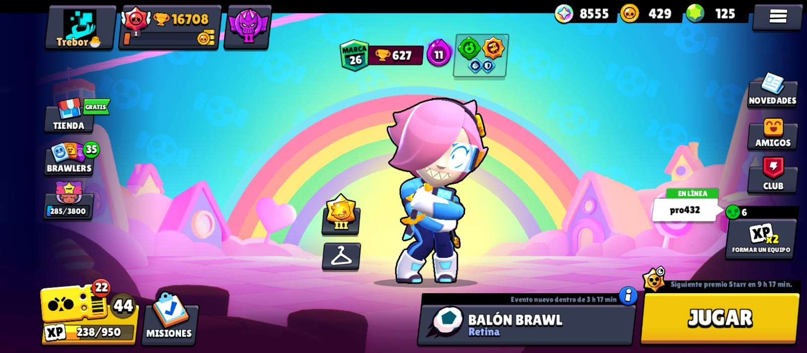
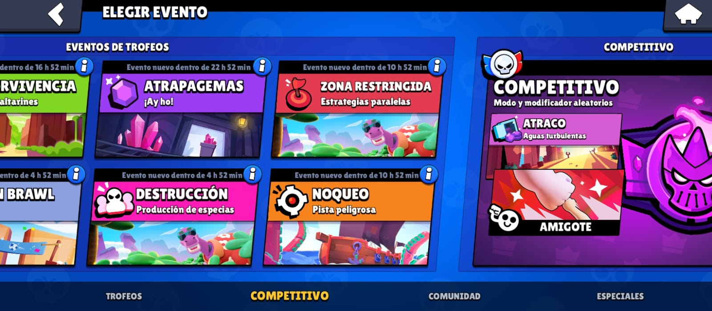
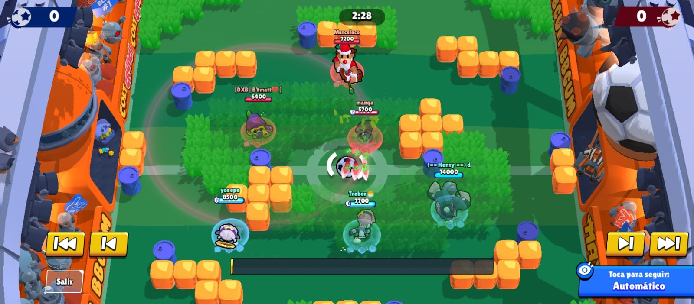
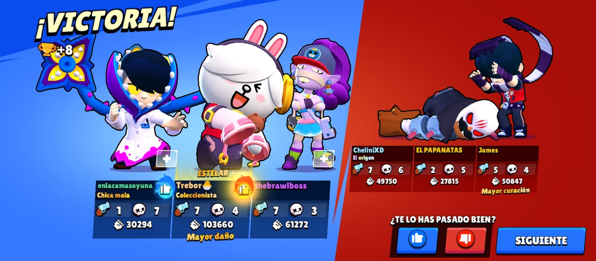
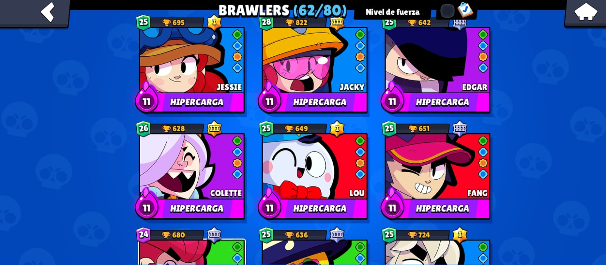

La versión beta del juego fue lanzada el 14 de junio de 2017 solo para Canadá, Australia y Nueva Zelanda con temáticas simples y mecánicas difíciles, mientras que la versión global se lanzó agregando un apartado visual con mayor detalles interesantes y diferentes funcionalidades, que se agregaron el 12 de diciembre de 2018. Actualmente lleva 5 años de existencia en el mundo de los videojuegos móviles.
Los jugadores entran a diferentes modos de juego, con diferentes brawlers, cada uno con habilidades únicas, que luchan en diferentes modos de juego para subirlos de rango, de trofeos y de maestría.
También los jugadores pueden unirse a clubes con sus compañeros o amigos y hacer partidas amistosas, jugar en diferentes modos de juego en competitivo o en solitario, o incluso crear sus propios mapas de juego.son un conteo especial de las estadísticas del jugador.
Se consiguen cuando ganas una partida.Tal como se consiguen al ganar, también pueden quitarte trofeos al perder.
Si en un modo de juego 3v3, algún compañero posee menos trofeos, se añadirán algunos trofeos extra al acabar la partida y en caso de perderla no se descontará ninguno.
nos ofrece muchas cosas:*Una vista al brawl pas
*Los modos de juego
*Los brawler
*Las copas en total
*La tienda
*El clan

los modos de juegos q hay son:*Supervivencia
*Balon Brawl
*Atrapagemas
*Destruccion
*Zona Restringida
*Atraco
*Noqueo
*Competitivo

Copas: si ganas te daran copas esto depende de cuantas copas tiene el brawler, mientas mas copas tengas menos copas te dan te pueden dar mas si tiemes una racha o si en tu equipo hay hay un jugador con menos copas te daran el "desventajas" el cual permite sumar mas copas si ganas y no perder copas si pierde
Maestris:estos son puntos q te dan a la hora de ganar partida y si pierdes no te vajaran los puntos obtenidos esto tiene un objetivo completar toda la maestria desde bronce I hasta oro III para reclamar las recompensas y el titulo


hay un total de 80 brawler en el juego actualmente cada uno con aspectos diferentes y abilidades q los haces unicos y especial para q el jugador sea libre de ver con cual decea jugar y poner subir de copas.al inicia al desbloquear a uno te lo dan a fuerza 1 y lo tiens q mejorar hasta fuerza 11 cada uno de ellos tienen su titulo, gayet y abildad estelar, tambien tienen rango comienzas desde el rango 1 y rango 35, pero no es necesario q lleges hasta esa sifra ya q eso no demuestra si eres bueno o no